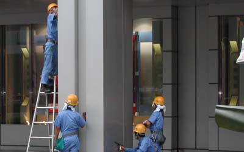
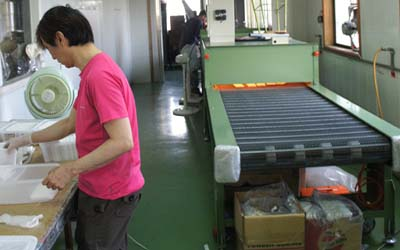

光觸媒加工(設計、合作)步驟：
1. 依客戶所需(討論用途、目標價)；使用環境條件，其抗菌或抗污、除臭....等不同功能是否可行。
2. 依被加工材料或元件，選用最佳之光觸媒原料及最佳節省原料之加工法。
3. 產品或模組使用光學設計，使其充份發揮其效果。
4. 其它(專利、安規、效能驗證...等)。
世屋光觸媒加工自2002年從日本引進台灣，已具有16年之加工技術與經驗，並榮獲政府研發補助。

光觸媒在SARS期間爆紅，也因為大多數商家對其用認知有限，誤導大眾不當使用，把它當成萬能的材料，造成許多人日後對光觸媒的信心大減，曾有業者在媒体上使用單純型的二氧化鈦對著百年油畫上噴塗，這種錯誤的作法都該導正。
首先我們要知，在處理細菌防治時，光觸媒並不是站在第一防線，而是站在第二防線,傳統的消毒方法有立即見效的優點，但是其效能維持有限，因此使用光觸媒做為持續的消毒，將活動空間的菌量有效降低，彌補原有之不足，這才是合理做法。
其次任何的細菌都必需與光觸媒表面接觸才能發揮作用，其作用快慢取決於光源之波長、強度及接觸面積，因此使用光觸媒噴撒在空間上是不可行的，光觸媒需塗佈在物体表面，其表面又需視材料不同使用適當之光觸媒材料。
使用光觸媒材料還必需考慮到附著度，一般而言是使用無機之接著劑或是使用物理法將其附著，如果是使用在空氣清淨機上，還必需考慮其流體力學、接觸面積、時間、受光單位之平均等因素，使用在水處理系統，可利用傳統之處理再加上光觸媒之設計，將更為有效。

選擇光觸媒材料外，其中晶粒尺吋在到30-40以下，就會產生觸媒做用，根據研究顯示，在此以下之範為下，光催化活性與表面積比並沒有直接太大的關係，而是在原材料被反應物等因素，以P25材料為例(20奈米)，就以許多1-10奈米之光觸媒效果優，因此不能用奈米呎寸做為唯一評斷其效果，因為在光化學中，還有許多限制，
1. 依客戶所需(討論用途、目標價)；使用環境條件，其抗菌或抗污、除臭....等不同功能是否可行。
2. 依被加工材料或元件，選用最佳之光觸媒原料及最佳節省原料之加工法。
3. 產品或模組使用光學設計，使其充份發揮其效果。
4. 其它(專利、安規、效能驗證...等)。
世屋光觸媒加工自2002年從日本引進台灣，已具有16年之加工技術與經驗，並榮獲政府研發補助。